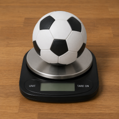
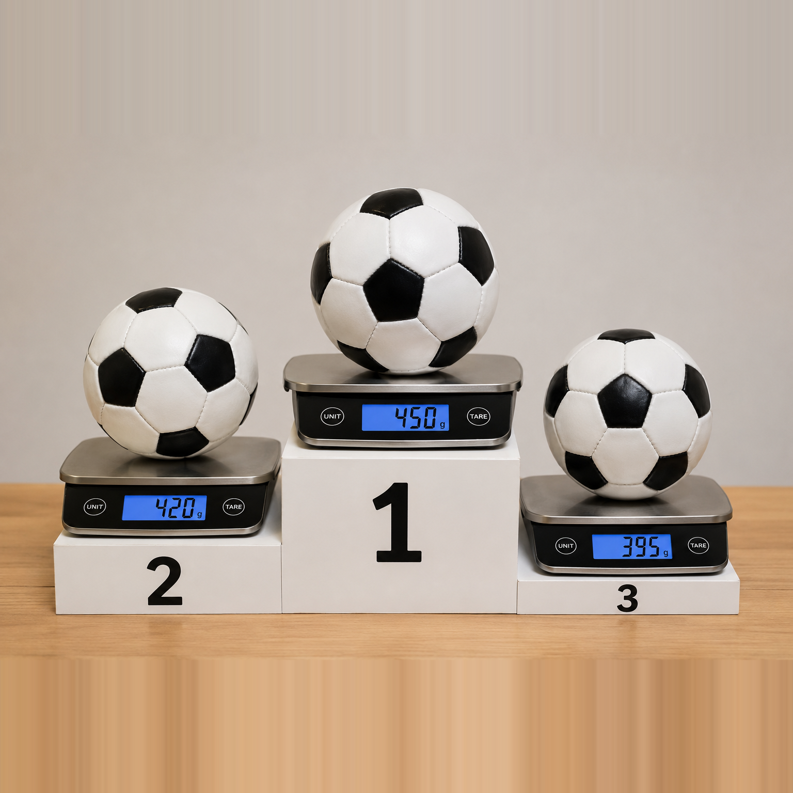

التمرين هو أفضل طريقة لتعزيز التعلم
3 أسئلة
وهناك تلميح من البداية! أجيبوا بشكل صحيح عن سؤالين فما فوق لتتمكّنوا من التقدّم.
أين نحتاج إلى دقّة أعلى؟
اختاروا الحالتين اللتين تحتاجان إلى دقّة عالية جدًا:
قامت عالِمة بقياس وزن نفس العينة ثلاث مرات. لماذا؟
قياس أم شعور؟
دارَ نقاش في عائلة غرام. كان الزوجان في ورشة قاس وزن، وقاما بقياس وزن خاتم ذهب:
السيدة ميلي (غرام): "كتلة الخاتم هي 5.20 غرام"
السيد كيلو (غرام): "أنتِ مخطئة، الخاتم ثقيل"
أيّ الادّعاءين يوفّر دليلًا علميًا أفضل؟
عمل رائع!
فيما يلي سؤال آخر بمستوى صعوبة أعلى.
أجيبوا عن 3 من 4 بنود بشكل صحيح لتتمكّنوا من التقدّم.

اختيار الميزان الصحيح
تفحص شركة لمعدات الرياضة ما إذا كانت كرات القدم مطابقة لمعيار FIFA (الاتحاد الدولي لكرة القدم).
بحسب المعيار، يجب أن تكون كتلة الكرة المعيارية بين 410 و-450 غرام. ساعدوا الشركة على اختيار الميزان الأنسب من الإمكانيات التالية:
| مستوى الدقّة | نوع الميزان |
|---|---|
| 1 غرام | ميزان مطبخ |
| 0.01 غرام | ميزان مختبر |
| 0.001 غرام | ميزان تحليلي |
البند أ
أيّ نوع ميزان هو الأنسب للمهمّة؟
البند ب
قاس التقنيّ كتلة الكرة نفسها 3 مرات:
428 غرام

430 غرام

429 غرام

البند ت
حدّدوا ما إذا كانت الجملة التالية صحيحة أم غير صحيحة.

البند ت
لماذا من الأفضل حساب معدل 3 قياسات بدلًا من الاعتماد على قياس واحد فقط؟
تلميح
في أي حالة يمكن لخطأ بسيط أن يؤدي ضرر أو إلى خسارة مالية كبيرة؟
تلميح
هل إجراء القياس لمرة واحدة يمثل أو يعطي النتيجة الصحيحة؟
تلميح
أي ادّعاء يستند إلى معطيات كمّيّة؟
تلميح
هل نحتاج إلى دقة بمقدار أجزاء بالألف من الغرام لفحص كرة كتلتها 430 غرام تقريبًا؟
تلميح
حساب المعدل هو مجموع النتائج مقسومًا على عدد النتائج.
تلميح
هل يقع العدد 429 ضمن المجال 450-410؟
تلميح
قد يحدث خطأ عشوائي في القياس الواحد.